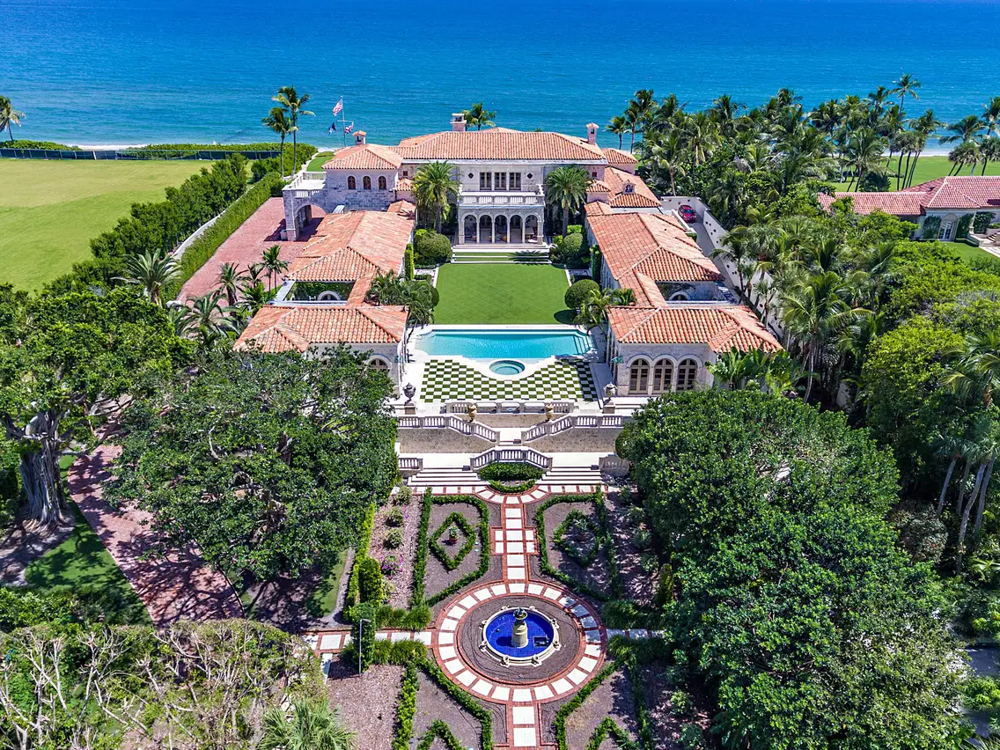

In de toekomst zal ik in een enorm herenhuis wonen omdat ik het beste spel op heel de aarde ooit zal maken met mijn programmeringsvaardigheden. ik zal een gemiddelde van 38,4 miljoen euro maken per maand. Kort samengevat: ik zal de nieuwe Elon Musk worden.